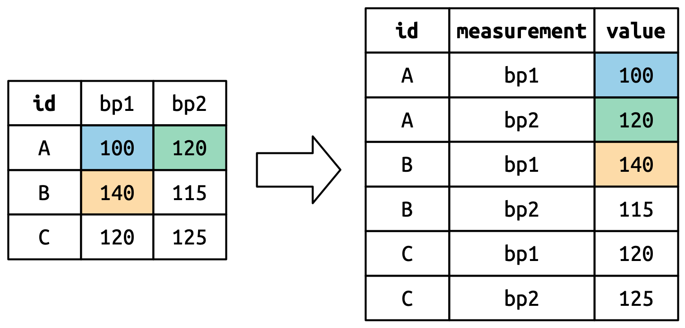
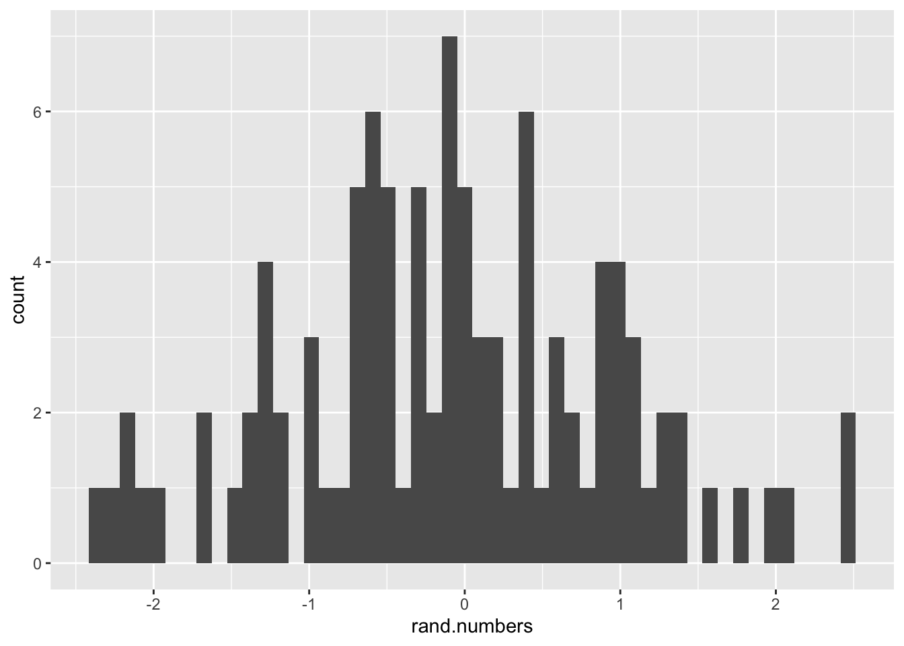

Bioinformatics Introductory Course - Master Molecular Biotechnology
Introduction
R is a powerful programming language for the analysis of data. R is very versatile, it is free, and very easy to understand. That is because, unlike other programming languages, R is quite “human-friendly” and dynamic, thus it does not require compiling to be “machine-readable”. All you have to do is type R commands in the console or script.
Through this course, you will learn:
- Basic R programming for data analysis (before we start, go though the sections present in this Introduction)
- How to use R to work on different datasets and apply statistics (Week One)
- How to annotate, analyse, obtain, pre-process, and visualize genomic data (Week Two)
- How to perform RNA-seq analysis (Week Three)
Where to start
Log into the server
We will use an RStudio Server running on a virtual machine. Here are the instructions to connect:
You can find the list of students here. Check your name, your user name on which you will connect.
if you are running machine with Linux or MacOS
- open a terminal and type the following commang:
- GK1:
ssh <USER>@194.94.113.18 -p 30210 -L 8787:127.0.0.1:8787; replace<USER>with your user name from the Google Sheet - GK2:
ssh <USER>@194.94.113.18 -p 30108 -L 8787:127.0.0.1:8787; replace<USER>with your user name from the Google Sheet
- GK1:
- in a browser, go to this url
- log in with your user name and the password that will be provided to you.
You can now start working in RStudio!
if you are running machine with Windows
Here, the user should install Putty. In the GUI, the following settings are needed:
- In the main panel:
- Host name (or IP address):
@194.94.113.18 - Port: 30210 (GK1) or 30108 (GK2)
- Connection type: SSH
- Host name (or IP address):
- In the panel “Connection / SSH / Tunnel”:
- Source port: 8787
- Destination port: 127.0.0.1:8787
- Check options “Local” and “Auto”
- Then click “Add”
- Now click “Open”
- in a browser, go to this url
- log in with your user name and the password that will be provided to you.
You can now start working in RStudio!
Installing and configuring Cyberduck
In order to access remote files (for example opening a pdf file), you will need to install an additional tool, called cyberduck (https://cyberduck.io/).
- Install Cyberduck according to your operating system
- Once installed, open Cyberduck
- On the top left, click on Neue Verbindung(or new connection)
In the new window, make the following changes:
- select sftp in the dropdown menu
- in the server box, type 194.94.113.18
- in the port box, type 30210 (GK1) or 30108 (GK2)
- in Benutzername (or Username), type your username (like user1)
- password box: (ask for it!)
Click on Verbinden (or Connect)
Installing R and RStudio
Alternatively, you can also choose to install both R and RStudio. Rstudio is the most commonly used IDE (or Integrated Development Environment) for R, and it will use the R version installed on your computer. RStudio is meant to make R programming quite visual and way easier for you as a beginner.
Start by installing R and then RStudio.
RStudio is composed of 4 main windows/panels.
The Editor, the Environment, the Console, and the Files window/panel.
Order can vary.
![In Editor (1), you can find the area where you usually write most code, like a Rscript or a Rmarkdown. Environment (2) shows you your variables, history, among others. Here, you can see any variable you define in your session. You can use this to do a very basic inspection of objects you create or import. Console (3) is where all your code gets processed when you run it. The console remembers (which is why when you click arrow up or down, it shows you commands you ran before), but it does not keep! Therefore, ALWAYS write the meaningful code lines in a script/markdown (1). Lastly, 4 can be used for browsing documents (Files), see the plots you produce (Plots), searching/managing packages (Packages), or find help on functions (Help).](figures/RstudioLayout.png)
Courses
It is recommended that you take an introductory class for R to get to know this language before you start coding here. Start by going through this Chapter on Getting Started with Data in R. We will cover other basics on the next sections.
You can find more resources here:
- R Tutorial for Beginners at guru99
- R courses at Babraham Bioinformatics
- R for Data Science
- R markdown at RStudio and in this cheatsheet
- Youtube tutorial on ggplot2 with one of its developers
Good practice
Two notes of advice about good practice now that your journey is about to start:
- Commenting: Comment your code as you go with
#! This way you avoid forgetting the meaning of a given line. This is also important if you want to share your code with others. Trust me, you will not remember what you are writing today in this class one week from now, so it will be best to have a reminder.
- Clean and tidy code: See that weird line in the middle of your script/markdown? This is meant to be a guideline about code length. If your code is so long that it crosses the line, please find a way to make it shorter. In addition, avoid making your chunks too long and make separate markdowns or scripts for each class or topic, it will keep everything more organised and easy to track.
R Markdown
R Markdown is a simple formatting syntax for authoring HTML, PDF, and MS Word documents. You will be working with R Markdown during this course. For more details on using R Markdown see http://rmarkdown.rstudio.com or https://www.markdownguide.org/basic-syntax/.
R instructions in a markdown file are written in a “chunk”, the one below.
Chunks can be added using the +C icon at the top right corner of this panel/editor.
There is also a keyboard shortcut for it.
# Sentences written after "#" are comments. Comments are ignored during the execution of the code.
# print "Hello world!" on the screen.
print("Hello world!")## [1] "Hello world!"What happens in the editor if you remove the second parenthesis? Do you see the red cross appearing? You can click on it and read the comment.
And what happens if you press “enter” while the second parenthesis is missing?
R is very smart and it will usually let know know when there is a simple syntax mistake like this one on your code. R will also try to guess variable and function names from your input, all you have to do is click TAB for auto-complete.
R Basics
Variable assignment in R
You can start by testing one of the most basic tasks - variable assignment.
Variable assignments in R can be done using either the <- symbol, or the = symbol.
You can now run print(a) and print(hello).
Note that after assignment both variables (a and hello) are listed in the “Environment” window of RStudio.
R is case sensitive.
hellois a known variable, butHellois not!
You can remove variables too…
Classes
In the same way that a orange is a fruit or Malta is a country, any R variable corresponds to a class and holds a given structure.
Classes Let us say you generate a new variable (name).
How can you know more about it?
The function str() gives you the structure of the variable.
## chr "Marie"where chr stands for character, the class of this variable.
The function class() gives you the class of the variable.
## [1] "character"Logical operations
We can perform tests on simple variables using the ==, >,< operators:
## [1] FALSEThe output of this test will be either FALSE/TRUE. You can test these using numbers too:
## [1] TRUEVectors
We can make any vector using c().
Try it with some numbers.
If you want to identify the specific number of this vector by position, you can use square brackets. Like this:
Matrixes
A matrix is a two-dimensional array of numbers.
They are defined using the matrix() function as follows: Take note of the difference between byrow=FALSE and byrow=TRUE.
x <- c(1, 2, 3, 4, 5, 6)
X <- matrix(data = x, nrow = 2, ncol = 3, byrow = TRUE)
X <- matrix(data = x, nrow = 2, ncol = 3, byrow = FALSE)Do you understand all parameters (“nrow”, “ncol”, “byrow”) of the
matrix()function? What happens if you do not specify “byrow” as TRUE or FALSE?
You can ask for the dimensions of a matrix (and see later also for data frames) using the function dim().
Do it for X.
To access the elements of a matrix, it is similar to the vector but with 2 indexes:
Dataframes
Data frames are like matrices, but they can contain multiple types of values mixed.
We can create a data frame using the data.frame() function.
We can also convert a matrix into a data frame with the as.data.frame() function.
We can prepare three vectors of the same length (for example 4 elements) and create a data frame:
Name <- c("Leah", "Alice", "Jonas", "Paula")
Age <- c(21, 22, 20, 22)
Course <- c("Mathematics", "Physics", "Medicine", "Biology")
Place_of_birth <- c("USA", "Germany", "Germany", "France")
Students <- data.frame(First_Name = Name,
Age = Age,
Course = Course,
Place_of_birth = Place_of_birth)
Students## First_Name Age Course Place_of_birth
## 1 Leah 21 Mathematics USA
## 2 Alice 22 Physics Germany
## 3 Jonas 20 Medicine Germany
## 4 Paula 22 Biology FranceWe can again access specific elements in a similar manner to the matrix before. Try some of these examples:
Apply, sapply, lapply
Apply() is used to repeat the same operation over all columns/rows of a matrix or data frame.
Therefore, we need to specify three parameters:
1.
The matrix on which the operation should be performed
2.
Whether to repeat the operation over rows, which is defined by a “1”, or columns (use a “2” instead)
3.
The operation that should be performed.
Let’s have a look at an example to make this more clear: We want to determine the minimum for each row of the matrix “Mat”.
Therefore, we can use the function min().
#First, we build the matrix
m <- rnorm(30) # generate 30 random numbers for the matrix
Mat <- matrix(data = m, nrow = 6)
Mat## [,1] [,2] [,3] [,4] [,5]
## [1,] 0.81075342 1.63010444 0.1009744 -0.51431302 0.3188881
## [2,] -1.02544562 0.45038368 0.5050776 0.19423683 1.5527958
## [3,] 1.06936183 0.06153936 -0.1269797 -0.02154715 -0.3657364
## [4,] 0.88974304 -0.43830831 0.1023935 0.75687749 -1.0931076
## [5,] -0.07781049 0.49469362 0.3494489 -0.77850067 -0.1861264
## [6,] 0.02723114 -1.68036554 -0.9208189 -1.10706835 1.0189460## [1] -0.5143130 -1.0254456 -0.3657364 -1.0931076 -0.7785007 -1.6803655What happens if you change the “1” in the apply function to “2”? Try it!
Remember that you can use
help(apply)or?applyto get help on this function!
We can perform a loop over all elements of a vector or list using the sapply() function.
sapply() needs two information:
1.
which vector do we consider?
2.
which function do we want to apply to each element of this vector?
sapply() will return a vector containing the results.
For instance, we can calculate the square root of every element of a vector using the function sqrt():
## [1] 1.000000 1.414214 1.732051 2.000000 2.236068Instead of using built-in functions, we can also write our own little function and combine it with sapply(), apply() or lapply() (see below):
## [1] 2 4 6 8 10## [,1] [,2] [,3] [,4] [,5]
## [1,] 0.81075342 1.63010444 0.1009744 -0.51431302 0.3188881
## [2,] -1.02544562 0.45038368 0.5050776 0.19423683 1.5527958
## [3,] 1.06936183 0.06153936 -0.1269797 -0.02154715 -0.3657364
## [4,] 0.88974304 -0.43830831 0.1023935 0.75687749 -1.0931076
## [5,] -0.07781049 0.49469362 0.3494489 -0.77850067 -0.1861264
## [6,] 0.02723114 -1.68036554 -0.9208189 -1.10706835 1.0189460apply(Mat, 1, function(x) {sum(x*2)}) #the operation is performed on every row of "Mat"; every element is multiplied by two and the sum of the row is calculated## [1] 4.6928147 3.3540966 1.2332761 0.4351964 -0.3965901 -5.3241513Besides, we can use sapply() for a list, for example to calculate the length of every element using length():
List1 <- list(color = c("blue", "red"), size = 5, state = c(TRUE, FALSE, TRUE, TRUE))
sapply(List1, length)## color size state
## 2 1 4As you can see, this returns a vector with the length of every list element.
However, sometimes it can be useful to keep the results stored in a list.
Therefore, we can use lapply() instead.
Let’s have a look at the difference between sapply() and lapply() using the example from above:
## $color
## [1] 2
##
## $size
## [1] 1
##
## $state
## [1] 4Do you understand the difference?
For Loops
Besides the apply-family, we can use for loops for iterating over a sequence:
## [1] "a"
## [1] "b"
## [1] "c"## [1] 3
## [1] 6
## [1] 9
## [1] 12If Statements
You can use an if statement to execute a block of code only, if a condition is TRUE.
## [1] "a is smaller than b"Modify “a” or “b” and see how the output changes!
We can also add else if to this statement. In that case, if the if condition is FALSE, the else if condition will be tried:
a <- 10
b <- 10
if (a < b) {
print("a is smaller than b")
} else if (a == b) {
print("a is equal to b")
}## [1] "a is equal to b"Besides, we can add an else statement to be executed when all previous conditions are not TRUE.
a <- 10
b <- 5
if (a < b) {
print("a is smaller than b")
} else if (a == b) {
print("a is equal to b")
} else {
print("a is greater than b")
}## [1] "a is greater than b"Do you understand how this works? What would happen if a = 10 and b = 10? Try it!
Data wrangling with tidyverse
Introducing tidyverse
Tidyverse is a set of packages often used to manipulate data. You can think of tidyverse as a variation of the original R, which is meant to be a grammar specific to data manipulation.
You can install these through:
And load it using
## ── Attaching core tidyverse packages ────────────────────────────── tidyverse 2.0.0 ──
## ✔ dplyr 1.1.3 ✔ readr 2.1.4
## ✔ forcats 1.0.0 ✔ stringr 1.5.0
## ✔ ggplot2 3.4.3 ✔ tibble 3.2.1
## ✔ lubridate 1.9.3 ✔ tidyr 1.3.0
## ✔ purrr 1.0.2
## ── Conflicts ──────────────────────────────────────────────── tidyverse_conflicts() ──
## ✖ dplyr::filter() masks stats::filter()
## ✖ dplyr::lag() masks stats::lag()
## ℹ Use the conflicted package (<http://conflicted.r-lib.org/>) to force all conflicts to become errorsYou can find R packages in CRAN.
CRAN is a large repository containing almost 20 thousand packages!
For this course, we will just use CRAN packages.
To install them, you will use install.packages().
We will learn a couple of functions from this framework which will make the next tasks a lot easier. Tidyverse works with the tibble class, which is very similar to a the dataframe class, only faster and tidier.
Start by loading a default tibble including sleeping patterns from different mammals. It also includes information on the animal order, genus, diet, or body weight. To do so, run the following:
We can start by inspecting msleep.
We can print the first rows of a dataframe using head().
Try it out.
## # A tibble: 6 × 11
## name genus vore order conservation sleep_total sleep_rem sleep_cycle awake
## <chr> <chr> <chr> <chr> <chr> <dbl> <dbl> <dbl> <dbl>
## 1 Cheetah Acin… carni Carn… lc 12.1 NA NA 11.9
## 2 Owl mo… Aotus omni Prim… <NA> 17 1.8 NA 7
## 3 Mounta… Aplo… herbi Rode… nt 14.4 2.4 NA 9.6
## 4 Greate… Blar… omni Sori… lc 14.9 2.3 0.133 9.1
## 5 Cow Bos herbi Arti… domesticated 4 0.7 0.667 20
## 6 Three-… Brad… herbi Pilo… <NA> 14.4 2.2 0.767 9.6
## # ℹ 2 more variables: brainwt <dbl>, bodywt <dbl>Filter based on conditions
Now that we know how this dataset looks like, we can start doing more with it.
Let us see the information for the domestic pig.
We can do it using filter() on the genus column:
## # A tibble: 1 × 11
## name genus vore order conservation sleep_total sleep_rem sleep_cycle awake
## <chr> <chr> <chr> <chr> <chr> <dbl> <dbl> <dbl> <dbl>
## 1 Pig Sus omni Artiod… domesticated 9.1 2.4 0.5 14.9
## # ℹ 2 more variables: brainwt <dbl>, bodywt <dbl>We also use the %>% operator here.
This is a pipe operator and you will use it very often.
To understand piping, let’s imagine you are making a three layer cake in a factory. Instead of manually carrying the cake from one station to another to add layers and frosting, you have a conveyor belt transporting the cake through the stations automatically to make the process much more efficient. Piping avoids that you have to create multiple intermediate objects to achieve your final result when performing multiple functions.
Try filtering other columns based on numeric conditions. Use
filter()to see which 7 animals in the datasets have a body weight superior to 200 (kg).
Select specific columns
Now, let’s say you want to select only specific columns.
Use the select() function to select the columns name, order, and bodywt (body weight).
## # A tibble: 6 × 3
## name order bodywt
## <chr> <chr> <dbl>
## 1 Cheetah Carnivora 50
## 2 Owl monkey Primates 0.48
## 3 Mountain beaver Rodentia 1.35
## 4 Greater short-tailed shrew Soricomorpha 0.019
## 5 Cow Artiodactyla 600
## 6 Three-toed sloth Pilosa 3.85Operations on groups
We can assess the average (mean()) body weight by animal order present.
To do so, we will use summarise() and group_by() functions on the body_weights we generated previously.
group_by(): Assigns a group to a given set of rows (observations).
summarise(): Makes calculations for a given group based on the row values assigned to it.
body_weights %>%
group_by(order) %>%
summarise(mean_bweight = mean(bodywt, na.rm = T)) # na.rm = T will exclude missing values (NA)## # A tibble: 19 × 2
## order mean_bweight
## <chr> <dbl>
## 1 Afrosoricida 0.9
## 2 Artiodactyla 282.
## 3 Carnivora 57.7
## 4 Cetacea 342.
## 5 Chiroptera 0.0165
## 6 Cingulata 31.8
## 7 Didelphimorphia 1.03
## 8 Diprotodontia 1.36
## 9 Erinaceomorpha 0.66
## 10 Hyracoidea 3.06
## 11 Lagomorpha 2.5
## 12 Monotremata 4.5
## 13 Perissodactyla 305.
## 14 Pilosa 3.85
## 15 Primates 13.9
## 16 Proboscidea 4600.
## 17 Rodentia 0.288
## 18 Scandentia 0.104
## 19 Soricomorpha 0.0414Reshaping data
On tidyverse, he objects you are working on are sometimes not in a tidy format. There are three rules which make a dataset tidy:
- Each variable has its own column.
- Each observation has its own row.
- Each value has its own cell.
 Image source
How can we convert them then? The mammalian sleep dataset we used earlier is already in a tidy format, so we will generate an example.
You are testing a new diet on 7 cats, and thus registering their weight before and after 1 month on the diet.
cat.weights <- data.frame(CatName=c('Muffin', 'Lily', 'Mittens', 'Oreo', 'Loki', 'Fluffy', 'Honey'),
month0=c(4.3, 4.5, 5, 4.4, 3.8, 5.5, 4.5),
month1=c(4.4, 4.5, 4.9, 4.3, 3.9, 5.4, 4.6))
cat.weights## CatName month0 month1
## 1 Muffin 4.3 4.4
## 2 Lily 4.5 4.5
## 3 Mittens 5.0 4.9
## 4 Oreo 4.4 4.3
## 5 Loki 3.8 3.9
## 6 Fluffy 5.5 5.4
## 7 Honey 4.5 4.6In this example, you can see that we have 2 different variables for the same unit (weight), these are our gatherable columns.
We can then make this dataframe tidy using the gather() from the tidyr package:
library(tidyr)
cat.weights %>%
gather(key = Time, # column name given to the gathered column names
value = Weight, # column name will be given to the values
month0:month1) # columns to gather## CatName Time Weight
## 1 Muffin month0 4.3
## 2 Lily month0 4.5
## 3 Mittens month0 5.0
## 4 Oreo month0 4.4
## 5 Loki month0 3.8
## 6 Fluffy month0 5.5
## 7 Honey month0 4.5
## 8 Muffin month1 4.4
## 9 Lily month1 4.5
## 10 Mittens month1 4.9
## 11 Oreo month1 4.3
## 12 Loki month1 3.9
## 13 Fluffy month1 5.4
## 14 Honey month1 4.6Do you understand the differences? Note that now each name shows up twice.
Plotting using ggplot2
One of the many advantages of tidyverse is how compatible it is with ggplot2.
Thanks to the wonders of the %>% operator, you can generate a basic plot instantly from a gathered/tidy tibble without creating intermediate objects.
The structure of any ggplot() is always based on two essential elements: the aesthetics (aes()) and the plot layers (named as geom_something(). aes() can found within the ggplot() function or on the geom_something(). There are multiple options for geom_X() depending on the information you are plotting.
You can find all possibilities here.
The aes() function can harbor information on axis (x, y) and other aesthetics.
Let us see an example within the scatter plot next.
In this course we will work with ggplot(), but plots can also be generated by another framework.
The alternative to ggplot() is plot().
Beware when looking for solutions for your data visualization problems.
Scatter plot
For example, if we want to see the relationship between the sleep time (total, in hours) and the body weights, we use this formula:
ggplot(msleep, # start by picking the dataframe to plot
aes(x = bodywt, # column to use for x-axis
y = sleep_total)) + # column to use for y-axis
geom_point() # plot layer for points
The x-axis looks a little squished, so it will be hard to view many of the trends. We can then log-transform this scale using the
log()function. Try it out!
We can try to play with the other aesthetics of the plot. For example, we can use the colour easthetic to colour the dots based on the vore/diet.
Histogram
Let us start by making an histogram, as we will work with distributions over this course.
If we want to see the global distribution of sleep time (total, in hours) for all animals in the dataset, we will use geom_histogram().
Like this:
ggplot(msleep, # start by picking the dataframe to plot
aes(x = sleep_total)) + # column to use for y-axis
geom_histogram() # plot layer for histogram
In some cases, you will not have the data on a tidy tibble and rather on a vector for example. For such cases, the structure would be slightly different. Check how you can plot the distribution of a random set of numbers.
rand.numbers = rnorm(100) # we will learn this function later on
ggplot() +
geom_histogram(aes(x = rand.numbers), # aes goes in the plot layer for histogram
bins = 50)
Try changing the option
bins. What do you see?
Boxplot
In this next example, we are creating a boxplot with the sleep time (total, in hours) for each dietary group (vore).
ggplot(msleep, # we use na.omit here to hide NAs from the plot
aes(x = vore,
y = sleep_total)) +
geom_boxplot()
See the NA on the x-axis? In the course (week one) we will learn how to clean the data to avoid missing values like these ones.
Try some of the other geom_ layers available. As an example,
geom_violin()can be used in a similar way togeom_boxplot().
Common errors
Error in library(viridis) : there is no package called ‘viridis’:
Solution: install the required package using install.packages("package") and load it using library(package).
Error in gather : could not find function "gather":
Solution: load the package the function belongs to.
You can see it by running ??gather
Error in fortify(): ! data must be a <data.frame>, or an object coercible by fortify(), not a <uneval> object.:
Solution: aes() is within ggplot() when it should be on geom_...().
Introductory exercises
Exercise 1: Vectors
Create a vector named “test_scores” containing the test scores 75, 90, 65, 68 and 83 of students.
Create a vector “passing” that contains TRUE for test scores above 70 and FALSE for scores equal or below 70. Hint: Remember that you can perform tests on vector elements. Use
sum()to check how many students passed the test.(expert) Can you create a vector “high_scores” that contains only scores above 70, using the results obtained in 1. and 2.?
Exercise 2: Matrices
- Create a matrix that looks like this:
Select different parts of the matrix, for example:
- the element of the second row and first column
- the second and third element of the second column
- all elements of the last column
- Try something else!
Add a new column to the matrix using
cbind().Can you name the columns of the matrix as “A”, “B”, “C” and “D” using
colnames()?
Exercise 3: Data Frames
- Create a data frame from these vectors, with three columns and five rows:
Product_name <- c("orange", "strawberry", "broccoli", "blueberry", "cucumber")
Fruit <- c(TRUE, TRUE, FALSE, TRUE, FALSE)
Color <- c("orange", "red", "green", "blue", "green")Select the column “Fruit”. How many Fruits are there? Hint: Remember the function
sum().Add a column named “Berry” containing TRUE (for products that are berries) or FALSE to the data frame.